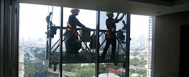

Kaca ialah salah satu faktor yang cukup penting pada sebuah bangunan baik untuk rumah tinggal, pertokoan, gedung bertingkat ataupun multi use building. Fungsi utama kaca yaitu sebagai pencahayaan natural dan juga sebagai bagian dari estetika bangunan. Berikut sedikit penjelasan yang bisa anda baca mengenai sebagai rujukan and ajika akan membangun rumah ataupun daerah usaha.
Variasi-jenis kaca diantara lain kaca tempered, kaca shower, railing kaca, kanopi kaca dan masih banyak lagi.
Jasa Pemasangan Railing Kaca
railing kaca Parepare yakni pilihan yang tepat saat Anda menghendakin desain interior rumah yang minimalis. Tidak Anda ingin memiliki rumah dengan desain interior minimalis, sungguh-sungguh ideal saat komponen tangga dan juga balkon memakai railing kaca Parepare ini. Pastikan bagian tersebut terbuat dari bahan aluminum yang kuat. Namun, selain desain, Anda juga perlu melihat bahan yang digunakan. Sebaiknya pakai kaca tempered sebab jenis kaca ini amat kuat. Tidak kaca ini pecah, pecahannya halus sehingga tak akan melukai orang. Malahan juga bahan yang digunakan.
Dalam hal ini, ada banyak variasi kaca yang dapat dipakai untuk membuat railing ini. Tidak ini tidak cuma ditetapkan oleh ketebalan atau harga tetapi juga oleh macam. Ini tipe kaca yang benar-benar kuat. Kaca ini benar-benar kuat dan juga aman. Aluminum lazimnya yang diaplikasikan sebagai railing atau pigura. Sekarang pasti, dengan railing ini, Anda tak hanya membikin tangga dan balkon lebih aman, tetapi juga untuk memperindah tampilan interior rumah Anda.
Harga yang betul-betul ekonomis serta mutu terbaik yang telah terjamin membuat anda tak akan menyesal membeli railing kaca Parepare di dis.or.id. Tentu dengan harga yang murah tetapi konsisten berkelas.
Info Pemesanan Selengkapnya
Google Maps: https://www.google.com/maps/d/viewer?mid=1W14inZYnfBEjAU3RL6mMdLOdyHyt3uKR&ll=-7.27380280025364%2C112.65243155000007&z=18
Note: https://www.facebook.com/notes/distributor-of-industrial-supply/kontraktor-jasa-pemasangan-railing-tangga-kaca/1785722898394256/
Event: https://www.facebook.com/events/1865522363760219/
Distributor, Supplier & Jasa Pasang Kanopi Kaca

Seiring dengan perkembangan zaman di dunia properti, sekarang kanopi kaca telah berkembang pesat mengikuti arsitektur modern. Diantaraya merupakan kaca tempered 8 mm, kaca tempered 10 mm clear, kaca tempered 12 mm clear, kaca laminated 12 mm clear, kaca laminated 5 mm + 5 mm clear non tempered kaca, kaca laminated 5 mm + 5 mm tempered clear dan masih banyak lagi. Canopy kaca dengan atap kaca memang sebuah bangunan yang asangat elgan untuk jaman modern seperti sekarang ini dengan harga yang sungguh-sungguh lumayan jika di bandingkan kanopi atap biasa. Kerja ini memang desain shower berbahan kaca memang lebih banyak diterapkan ketimbang desain shower berbahan tirai. Apabila tembus pandang, kaca mengabsorpsi sinar yang masuk sehingga kian tebal kaca maka kian sedikit cahaya yang dapat melaluinya, karenanya sifat transparannya makin berkurang.|Di samping pintu kaca shower akan membuat kamar mandi kecil menonjol lebih besar. Atap akrilik atau dapat juga disebut atap kaca acrylic ini banyak ditemukan di sebuah bangunan rumah, seperti ruko, apartemen, kafe, mall, hingga bangunan gedung.
Seiring dengan perkembangan dunia properti, sekarang kanopi kaca tempered telah berkembang pesat mengikuti arsitektur modern. Harga untuk setiap pemasangan malahan beragam layak dengan keperluan anda. Dis.or.id juga menyediakan jasa pemasangan kanopi kaca yang tentunya dengan bantuan energi professional yang telah berpengalaman. Banyak bangunan seperti gedung perkantoran, perumahan, ruko dan apartement yang menerapkan kanopi kaca tempered. Setelah kaca untuk atap kanopi cukup digemari. Tak anda sedang mencari kanopi kaca, anda bisa langsung mengunjungi dis.or.id. Disana anda akan mendapat kanopi kaca yang cocok dengan beraneka ketebalan dan harga yang cukup relatif murah.
Distributor & Supplier Kaca Shower
Kecuali tersebut sekarang dapat anda lakukan dengna menerapkan kaca shower untuk kamar mandi anda. Shower screen yaitu kotak atau alat yang berfungsi sebagai penyekat ruang khusus untuk kamar mandi. Penyekat ini akan memisahkan antara daerah berair yang diaplikasikan untuk mandi atau meletakan shower dan daerah lain yang ialah area kering. Kecuali ini akan berakibat kepada biaya yang akan dikeluarkan untuk membayar tukang. Apalagi sekarang sudah ada warung penjual shower screen yang menjual produknya dalam cara satu paket termasuk pemasangannnya. Kita tak perlu repot lagi mencari tukang sendiri sebab pemasangan alat sekat ini memang memerlukan teknik tersendiri.
Tidak anda membutuhkan kaca shower anda bisa mengunjungi lantas dis.or.id. Disana anda dapat memperoleh kaca shower yang berkualitas dan harga yang juga relatif murah.
Distributor, Supplier & Jasa Pasang Kanopi Kaca
Seiring dengan perkembangan zaman di dunia properti, kini kanopi kaca telah berkembang cepat mencontoh arsitektur modern. Seiring dengan perkembangan zaman di dunia properti, kini kanopi kaca terlah berkembang pesat mencontoh arsitektur modern . Dan sensasi mandi menjadi lebih asik untuk dirasakan. Seandainya tembus pandang, kaca mengabsorpsi cahaya yang masuk sehingga semakin tebal kaca karenanya kian sedikit sinar yang bisa melaluinya, karenanya sifat transparannya makin berkurang.|Di samping pintu kaca shower akan membuat kamar mandi kecil nampak lebih besar. Pada atap akrilik, absorpsi sinar yang terjadi demikian kecil sehingga sedangkan ketebalannya bertambah, sifat transparannya tak banyak berubah.
Dis.or.id dapat membantu anda yang berkeinginan memasang atap kaca skylight pada gedung, dengan bermacam kelebihan yang dapat anda dapatkan dengan memanfaatkan jasa yang di tawarkan dis.or.id. Harga untuk setiap pemasangan malahan beraneka pantas dengan kebutuhan anda. Dis.or.id juga menyediakan jasa pemasangan kanopi kaca yang tentunya dengan bantuan energi professional yang sudah berpengalaman. Sekiranya fungsi utama kanopi sebagai pelindung untuk bangunan tersebut, pemasangan kanopi kaca juga dapat membikin bangunan menjadi terlihat lebih menawan dan menarik, apalagi menerapkan konsep yang sama dengan konsep rumah minimalis. Tak anda sedang mencari kanopi kaca, anda bisa seketika mengunjungi dis.or.id. Disana anda akan mendapatkan kanopi kaca yang cocok dengan berjenis-jenis ketebalan dan harga yang cukup terjangkau.
Jasa Maintenance Kaca

Maintenance pada kaca benar-benar dibutuhkan supaya gedung pencakar langit milik Anda menonjol bagus dan bersih. Sudah beberapa tahun, kaca gedung menjadi kusam sebab terik sinar sang surya, debu, hujan, atau kotoran lainnya. Jasa maintenance kaca juga menawarkan pelayanan pembenaran. Tidak ada kaca yang rusak atau pecah, sanggup untuk melaksanakan pembetulan kapabel membersihkan bermacam-macam ragam kaca dengan ukuran, betuk, serta warna yang layak dengan yang Anda butuhkan. Kaca amat membutuhkan perawatan sebab tiap-tiap hari terkena sinar sang surya atau juga hujan. Tak kaca tidak kusam, maka kaca patut dibersihkan secara regular. Peralatan jenis kotoran seperti debu serta sinar sang surya dan juga hujan sering kali membikin kaca gedung menjadi kusan dan tak menarik.
Tak anda tertarik, anda dapat langsung mengunjungi website dis.or.id untuk memperhatikan isu lebih lanjut mengenai jasa maintenance kaca yang di tawarkan. Dis.or.id juga telah mempersiapkan dengan bermacam-macam alat yang bisa diterapkan untuk menjangkau segala sudut gedung, sekalipun gedung Anda betul-betul tinggi. Oleh karena itu, dis.or.id hanya memilih orang-orang yang betul-betul profesional dan sudah mempunyai pengalaman dalam hal maintenance kaca. Dengan telah memberikan training kepada kekuatan ahli sehingga mereka telah bisa menjalankan profesi mereka dengan benar-benar bagus.
Jasa Pemasangan Kaca Tempered
Selain cuma menjalankan pemasangan kaca tempered untuk gedung perkantoran, melainkan juga untuk rumah hunian. Selain itu saja. Selain sembarang tukang juga dapat melakukan cara kerja pemotongan ini. Selain ini tak lain karena semakin banyak orang yang memahami mutu serta keunggulan dari kaca tempered ini.
Tak anda beratensi untuk memasang kaca temeperd, anda hanya tinggal mengunjungi situs dis.or.id. Bukan sembarang alat yang diterapkan untuk memotong kaca tempered cocok dengan keperluan. Dis.or.id menawarkan jasa pemasangan kaca tempered sebab kami mempunyai alat yang komplit. Harga yang ditawarkan untuk pemasangan kaca tempered betul-betul murah.
Distributor & Supplier Pintu Kaca

Pengerjaan ini banyak figur pintu seperti sesuai dengan ada di bayangan Anda. Anda dapat pilih desain seperti apa yang Anda sukai. Perlengkapan contoh pintu kaca bisa anda dapatkan, tidak cuma model pintu kaca konvensional, yakni pintu kaca lipat, melainkan juga pintu kaca geser. Anda dapat menetapkan apakah figur pintu kaca lipat satu, lipat dua, atau sliding (geser). Tersedia sebagian ragam kaca dengan mutu yang terbaik, mulai dari kaca tempered sampai yang non-tempered. Kini paling banyak diminati ketika ini yakni kaca tempered sebab jauh lebih kuat dan tahan lama.
Dis.or.id menyediakan pintu kaca dengan berjenis-jenis jenis yang dapat anda pilih sesuai keperluan. Dengan tenaga spesialis yang sudah amat handal dalam membuat beraneka contoh pintu kaca.
Kaca yang di pakai adalah kaca dengan kwalitas terbaik. Untuk budget yang lebih sedikit, Anda bisa memilih tipe kaca non-tempered.
Jual Kaca Cermin
Kaca cermin dapat diwujudkan aksesoris untuk mempercantik interior rumah Anda. Kini, cermin tidak hanya berbentuk persegi saja. Ada cermin persegi yang ditempelkan beraturan, cermin berbentuk seperti daun, dan lain sebagainya. Ada cermin yang didesain unik seperti penyerupai daun, oval, dan lain sebagainya. Sekarang perlu dilihat juga merupakan apakah Anda ingin mempunyai kaca cermin desain minimalis atau yang elegan. Cermin minimalis memiliki siku. Anda seolah sedang berkaca.
Dis.or.id yaitu penyedia bermacam-macam ukuran kaca cermin yang dapat anda aplikasikan ke gedung, kantor ataupun rumah anda. Malahan, Anda dapat gunakan kaca cermin ini sekaligus sebagai material utama, seperti sebagai pintu lemari di kamar tidur Anda. Atau barangkali Anda menginginkan kaca cermin yang seketika bisa ditempelkan pada bagian furniture tertentu seperti pintu lemari. Anda bisa menambahkan frame atau tanpa pigura cocok dengan kesukaan Anda. Atau Anda dapat buat pintu kaca cermin. Tapi, Anda dapat melihat orang lain dari dalam rumah.
Distributor & Supplier Pintu Lipat Kaca

Sebab keunggulan yang dimiliki hal yang demikian, Anda pasti berpikir harga pintu kaca lipat frameless ini mahal. Pintu lipat kaca digunakan dikala ruangan digunakan untuk hal yang privacy. Anda dapat mencari figur pintu lipat kaca tempered minimalis lainnya. Apalagi seandainya taman Anda terbuka sehingga pencahayaan natural masuk. Maka, cahaya itupun akan masuk ke dalam ruang makan sebab penyekatnya terbuat dari pintu kaca transparan.
Ukuran kaca menjadi elemen penentu berapa harga pintu kaca lipat yang Anda inginkan. Melainkan bukan itu saja, aksesoris komplementer juga berpengaruh. Anda semestinya memutuskan aksesoris yang melengkapi pintu kaca lipat memiliki kualitas terbaik, seperti contoh hinges.
Jasa Pemasangan Kubikel Toilet
Ketika ini banyak desain toilet yang didominasi oleh kubikel/cubicle yang memiliki tampilan lebih modern dan mewah. Melainkan, seiiring berkembangnya desain interior, kamar mandi malah dapat di sekat dengan penyekat dari kaca.
Kaca sekarang banyak diaplikasikan sebagai penyekat ruang. Salah satunya di kamar mandi. Bila anda sedang membutuhkan kubikel kamar kecil, anda dapat seketika mengunjungi laman dis.or.id. Kaca sebagai penyekat dalam kamar mandi lazim disebut kaca shower. Kaca shower banyak digunakna sebab memberikan kesan mewah.
Keuntungan dari sekat kaca memberikan merupakan bisa memberikan efek luas karena ruangan tersekat namun secara visual tidak.
Tapi penerapan kaca di kamar mandi dapat jadi keadaan sulit ketika Anda meletakkannya dengan salah. Apabila anda ketika ini sedang memerlukan kaca shower untuk kamar mandi, segera saja kunjungi dis.or.id untuk melakukakn pengorderan ataupun menanyakan detail harga dari kaca shower.
Distributor & Supplier Partisi Kaca

Partisi kaca sudah tak lagi dianggap sebagai hal yang aneh lagi. Banyak rumah hunian yang sekatnya kini terbuat dari kaca. Belum lagi tarif untuk tukang yang dapat lebih banyak daripada pembelian bahan bangunan. Alasan yang ketiga, partisi kaca ini tak menghabiskan space. Pun ruangan disekat dengan partisi ini seperti kamar mandi dalam dan taman dalam ruangan. itu, tentukan juga tipe kaca yang ingin diaplikasikan apakah transparan, semi transparan, atau kaca cermin yang membikin ruangan sangat privat. juga dengan ragam kaca. Sebab kaca ini privacy ruangan yang disekat. Ada kaca transparan, semi transparan, dan juga kaca cemin yang membikin ruangan betul-betul privat. Bila anda untuk memasang dinding kaca penyekat, dis.or.id menyediakan jasa pemasangan dinding kaca penyekat untuk kamar mandi rumah anda.